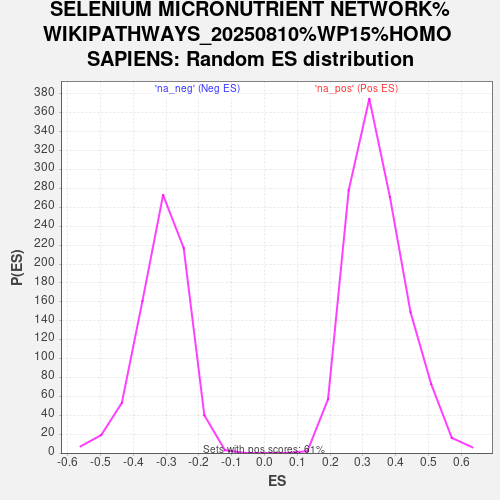

Profile of the Running ES Score & Positions of GeneSet Members on the Rank Ordered List
| Dataset | NHBE_SARSCoV2_ranks |
| Phenotype | NoPhenotypeAvailable |
| Upregulated in class | na_pos |
| GeneSet | SELENIUM MICRONUTRIENT NETWORK%WIKIPATHWAYS_20250810%WP15%HOMO SAPIENS |
| Enrichment Score (ES) | 0.85461485 |
| Normalized Enrichment Score (NES) | 2.4766479 |
| Nominal p-value | 0.0 |
| FDR q-value | 0.0 |
| FWER p-Value | 0.0 |
| SYMBOL | RANK IN GENE LIST | RANK METRIC SCORE | RUNNING ES | CORE ENRICHMENT | |
|---|---|---|---|---|---|
| 1 | SAA2 | 0 | 10.517 | 0.1116 | Yes |
| 2 | SAA1 | 10 | 8.245 | 0.1983 | Yes |
| 3 | IL6 | 26 | 7.388 | 0.2754 | Yes |
| 4 | IL1B | 28 | 7.157 | 0.3513 | Yes |
| 5 | PLAT | 34 | 6.988 | 0.4250 | Yes |
| 6 | NFKB2 | 43 | 6.386 | 0.4920 | Yes |
| 7 | SERPINA3 | 46 | 6.115 | 0.5567 | Yes |
| 8 | XDH | 71 | 5.036 | 0.6082 | Yes |
| 9 | TNF | 80 | 4.793 | 0.6584 | Yes |
| 10 | KYNU | 96 | 4.428 | 0.7041 | Yes |
| 11 | NFKB1 | 107 | 4.220 | 0.7480 | Yes |
| 12 | ALOX15B | 110 | 4.200 | 0.7924 | Yes |
| 13 | LDLR | 165 | 3.465 | 0.8247 | Yes |
| 14 | PTGS2 | 199 | 3.083 | 0.8546 | Yes |
| 15 | FLAD1 | 912 | 1.443 | 0.8106 | No |
| 16 | KMO | 1022 | 1.336 | 0.8157 | No |
| 17 | INSR | 1679 | 0.954 | 0.7712 | No |
| 18 | RELA | 1778 | 0.904 | 0.7726 | No |
| 19 | GPX4 | 2947 | 0.508 | 0.6807 | No |
| 20 | TXNRD2 | 3032 | 0.488 | 0.6788 | No |
| 21 | SCARB1 | 3562 | 0.378 | 0.6388 | No |
| 22 | GPX1 | 4213 | 0.257 | 0.5874 | No |
| 23 | PRDX5 | 4486 | 0.216 | 0.5670 | No |
| 24 | CBS | 6163 | -0.014 | 0.4275 | No |
| 25 | MTR | 6265 | -0.027 | 0.4194 | No |
| 26 | ALOX5 | 7329 | -0.163 | 0.3325 | No |
| 27 | CTH | 7374 | -0.169 | 0.3307 | No |
| 28 | ABCA1 | 7943 | -0.265 | 0.2862 | No |
| 29 | ALOX5AP | 8075 | -0.291 | 0.2783 | No |
| 30 | GPX2 | 8325 | -0.342 | 0.2612 | No |
| 31 | MSRB1 | 8856 | -0.453 | 0.2219 | No |
| 32 | PTGS1 | 9096 | -0.506 | 0.2073 | No |
| 33 | PRDX3 | 9185 | -0.528 | 0.2056 | No |
| 34 | TXN | 9276 | -0.556 | 0.2040 | No |
| 35 | SEPHS2 | 10213 | -0.852 | 0.1351 | No |
| 36 | GPX3 | 11458 | -1.594 | 0.0483 | No |
